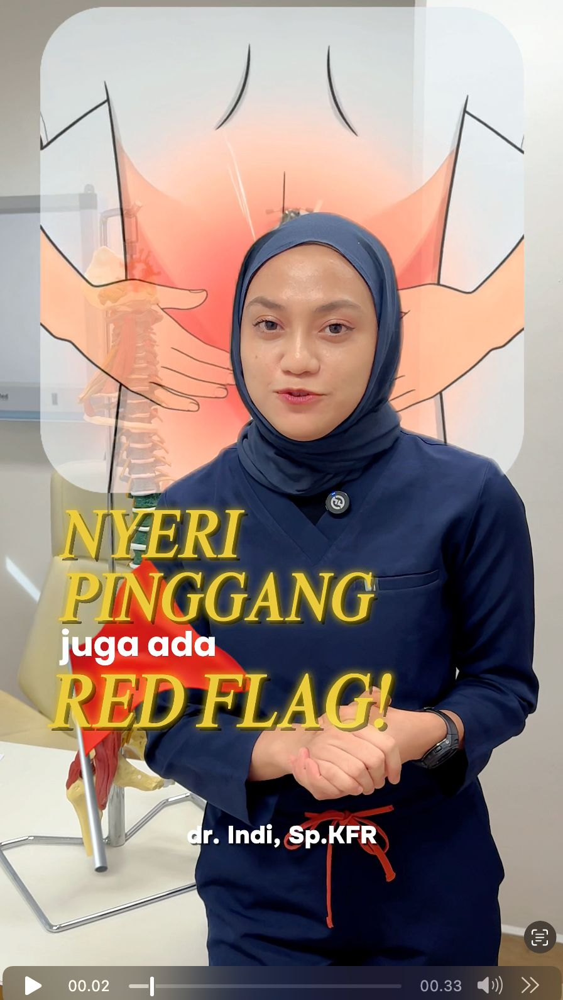
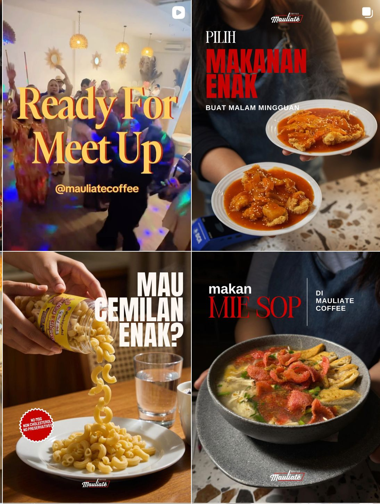

Services / Strategy to Execution
Creative services to build a personal brand that is trusted, consistent, and memorable.
From personal branding strategy to social media management, Karya Raja helps build a digital reputation with direction.
No complete brief needed. Start with a short message.
Ngonten dimana aja kapan aja.

Featured Service / 01Main Service
Personal Branding
Personal Branding is Karya Raja's main service to help you build reputation, positioning, and consistent digital communication. We help define how you want to be known, what message needs to be built, and how your content strengthens audience trust.
- Branding Strategy
- Positioning
- Personal Brand Narrative
- Content Planning
- Content Production
- Personal Branding Consultation
- Social Media Content
- Photography & Video Production
No complete brief needed. Start with a short message.
02 / Execution System
Social Media Management keeps the strategy active, consistent, and relevant.
Once the personal brand direction is clear, we help run it consistently. This service is the execution layer connecting strategy to your day-to-day presence on social media.
The focus is not simply posting regularly, but maintaining the message, quality, and momentum that allow reputation to grow.
No complete brief needed. Start with a short message.

- Content Calendar
- Content Strategy
- Caption Writing
- Content Publishing
- Monthly Report
- Audience Engagement Strategy
03-06 / Supporting Services
Supporting capabilities that help strategy become visible, active, and effective.
Selected according to your personal brand and communication goals.
Content Production
Turning ideas and strategy into credible photos, videos, and platform-ready content.
- Photo Production
- Video Production
- Short-form Content
- Production Direction
Graphic Design
Designing communication materials that are clear, consistent, and recognizable.
- Social Media Design
- Campaign Materials
- Presentation Design
- Marketing Collateral
Visual Design
Building a visual language that strengthens personal brand character and positioning.
- Visual Direction
- Brand Identity
- Art Direction
- Visual Guidelines
Web Development
Building a professional digital home for your profile, work, services, and conversion path.
- Personal Website
- Landing Page
- Company Profile
- Responsive Development
07 / Process
A structured process with room to think and grow.
- 01Discover
Understand the goal, audience, context, and current challenge.
- 02Position
Define the direction, key message, and space you want to own.
- 03Plan
Build the strategy, pillars, formats, and execution priorities.
- 04Produce
Develop content and creative assets with consistent direction.
- 05Manage
Keep publishing, communication, and the working rhythm moving.
- 06Improve
Read results, evaluate the process, and strengthen the next step.
08 / FAQ
Questions before we begin.
Short answers to help you choose the most sensible next step.
Do I need a complete brief first?
No. Bring the context around your profession or business, goals, social media accounts, and current challenges. We will help frame the questions and direction needed.
Can I start with personal branding only?
Yes. Personal Branding is our main service and can begin as a strategy, positioning, narrative, or consultation project before ongoing management.
Does social media management include content production?
The production scope depends on the project's needs and agreement. We will make it clear whether photography, video, and design are included or scoped separately.
Do you work with clients outside Medan?
Yes. Strategy, consultation, planning, and management can be handled remotely. Production needs are discussed based on location and content format.
How do I start a consultation?
Click the WhatsApp button, complete the short information prompt, and the Karya Raja team will guide the conversation and next step.
Ngonten dimana aja kapan aja.
Start with the reputation you want to build, not the content you want to post.
Tell us your goal and current challenge. We will help determine whether the right first step is personal branding strategy, consultation, or a social media management system.
No complete brief needed. Start with a short message.